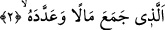

hâline getirmeyi ifâde eder. Onun için bir kimseye “duhake/çok gülen”, “luane/çok lânet
eden” denebilmesi için, bunu çok yapması, alışkanlık hâline getirmiş olması lâzımdır.
İbn Kuteybe Edebü’l-Kâtib isimli eserinde der ki: Arapçada “Fu’le” kalıbı,
mef‘ûlün sıfatlarındandır. “Fuale” kalıbı ise fâilin sıfatlarındandır. Bunun için kendisi
ile alay edilen adama “raculün hüz’e” denilir. İnsanları alaya alana ise, “raculün hüzee”
denilir. Lu‘na ve luane, lümze ve lümeze ve diğer buna benzer ifâde kalıpları hep
böyledir.
Bu âyet Ahnes b. Şerîk veya Velid b. Mugîra hakkında inmiştir. Çünkü bu iki herif
Rasûlullah (s.a.) Efendimiz’i gıybet ederlerdi. Fakat sahîh olan görüşe göre âyetin
hükmü umûmîdir, herkese şâmildir. Çünkü âyette “herkese” deniyor. Bu da, hükmün
genel olduğunu gösterir. Aynu’l-Meânî’de nakledilen Abdullah b. Mes‘ûd kırâatindeki
gibi “li külli” ifâdesi olmadan sâdece “veylün li’l-hümezeti ve’l-lümeze” denmiyor.
Bir hadis-i şerifte şöyle buyrulmaktadır: “Mü’min akıllı, anlayışlı ve tedbirli olur.
Ağırbaşlıdır, önünü arkasını araştırır, aceleci olmaz, âlimdir, şüpheli şeylerden kaçar.
Münâfık ise hümeze ve lümeze olur; yüze karşı ayıplar, arkadan çekiştirir. Katı ve
şiddetlidir. Gece odun toplayan gibidir, nereden kazandığını ve nereye harcadığını
bilmez.” [219]
Kâşânî der ki: Hemz ve lemz cehâletten, gazap ve kibirden mürekkeb bir
ahlâksızlıktır. Çünkü bu iki karakterin yapısı insanlara eziyet etmeyi ve onlara karşı
büyüklük taslamayı ihtivâ eder. Bu huyların sâhibi, diğer insanlardan üstün olmak ister.
Ancak kendinde onu üstün yapacak bir fazîlet bulunmadığı için, insanlara ayıp ve
ahlâksızlık nisbet ederek onlardan üstün olduğunun ortaya çıkmasına çalışır. Hâlbuki
bilmez ki yaptığı şey, ahlâksızlığın ta kendisidir. Ahlâksız olmak fazîlet değildir. Bu
kimse kendi nefsi ve şeytanı tarafından aldatılmıştır. O kuvve-i nutkiyye ile kuvve-i
gazabiye ahlâksızlığı ile vasıflanmış bir kimsedir.
2. O ki, mal toplamış ve onu sayıp durmuştur.
“Mal yığmak” fiili, daha önce geçen “külli/herkes” kelimesinden bedeldir. Burada
âdetâ şöyle denmektedir: Mal biriktirenin vay hâline! Allah Teâlâ’nın, onu böylesine
mânevî bir vasıfla nitelemesi boşuna değildir. Çünkü hümeze ve lümezenin sebebi âdetâ
budur. Kişi mal biriktirdiği için kendini beğenmeye başlar. Mal çokluğunun kişiyi
değerli kıldığını ve fazîlet sâhibi yaptığını zanneder. Bundan dolayı başkalarını eksik
görmeye başlar.
Bu âyetteki “mâlen” kelimesinin başında “el” takısının olmaması, bu tür insanların
biriktirdiği malın çokluğunu ifâde etmek içindir. Bu durum bir sonraki sayıp durmak
kelimesiyle de uyumludur.